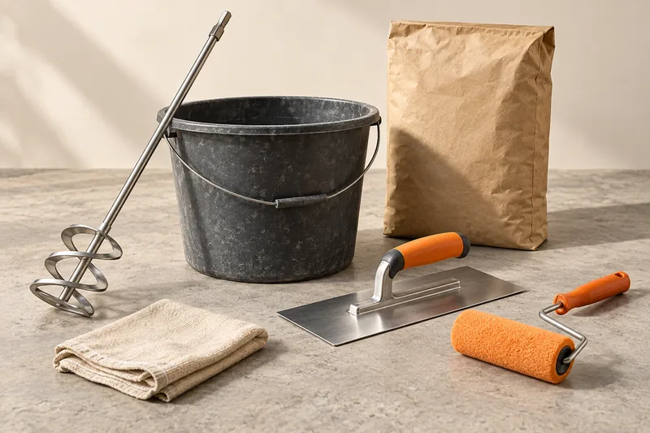

Mix self-leveling concrete to the exact water-to-powder ratio printed on the bag, using a low-speed drill and paddle for 2–3 minutes until lump-free, and size each batch to what you can pour within the product's working time — usually 15–30 minutes.

Why the Water Ratio Matters
Self-leveling compounds are engineered around a specific water-to-powder ratio that controls flow, working time, and final cured strength. Too little water and the mix won't flow or self-level correctly; too much water thins the mix, weakens the cured surface, and increases shrinkage cracking risk. Always measure water rather than estimating by eye.
Step-by-Step Mixing
- Measure the exact water volume specified on the bag into a clean bucket.
- Add the powder to the water (check your product's instructions — some specify powder-to-water, not the reverse).
- Mix with a low-speed drill and paddle for the time specified, typically 2–3 minutes, until the mix is smooth and lump-free.
- Let the mix rest briefly if instructed (some products call for a short slake time before a final short remix).
- Pour immediately once mixed — most compounds start losing workability within 15–30 minutes.
Sizing Your Batches
Because working time is short, mix only what you can pour and spread before the material starts to set. For larger rooms, plan continuous batches with a second person on standby to start the next batch while the first is being poured, so there's no delay that could create a visible seam.
Common Mixing Mistakes
- Adding water by eye instead of measuring it.
- Mixing a batch larger than can be poured within the working time.
- Using a high-speed drill, which can introduce excess air into the mix.
- Not cleaning tools between batches, letting cured residue contaminate the next mix.
Frequently Asked Questions
Can I mix by hand instead of with a drill?
Manufacturers generally require mechanical mixing with a low-speed drill and paddle to achieve a consistent, lump-free mix — hand mixing usually isn't recommended and can leave the product uneven.
What if my mix seems too thick or too thin?
Don't adjust water on the fly beyond the manufacturer's stated ratio — an off-ratio mix is a common cause of later cracking, poor leveling, or weak cured strength. Remix a fresh batch to the correct ratio instead.
Related Guides
Sources & References
- Manufacturer mixing instructions and technical data sheets